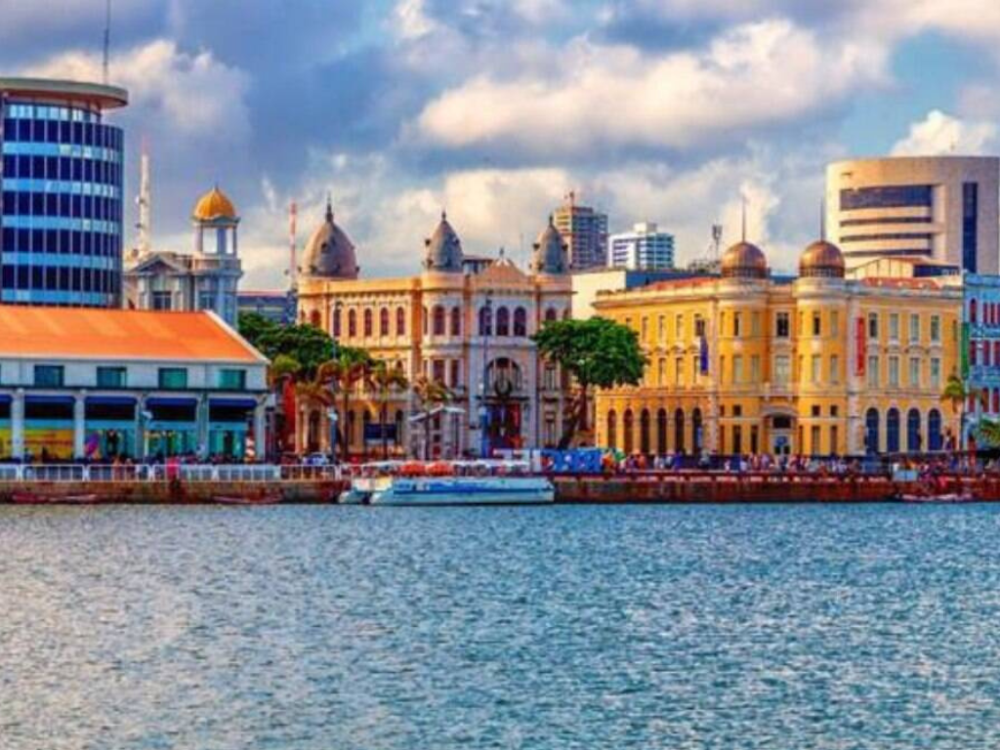

Pernambuco é um estado que pulsa história, criatividade e uma identidade cultural inigualável, sendo o berço de tradições que definem a própria essência do Brasil, como o frevo e o maracatu. Sua capital, Recife, é uma metrópole que une modernidade e passado colonial entre pontes e rios, vizinha à histórica Olinda, com suas ladeiras coloridas e igrejas seculares tombadas como Patrimônio da Humanidade. Além do legado urbano, o estado abriga joias naturais de beleza absoluta, como o arquipélago de Fernando de Noronha, referência mundial em conservação marinha e paisagens paradisíacas, e as famosas praias de Porto de Galinhas, com suas piscinas naturais de águas cristalinas. Com uma gastronomia rica e um povo que carrega no peito o orgulho de suas raízes, Pernambuco se consolida como um dos destinos mais vibrantes e fascinantes do Nordeste brasileiro.
